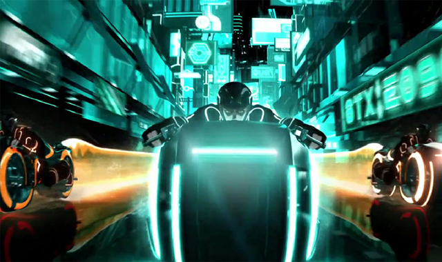
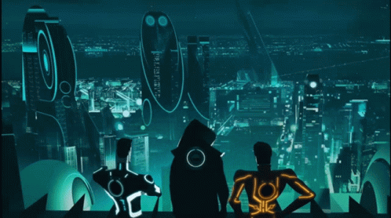

Tron Uprising Recap Spolier Warning!!
In the series Tron Uprising you follow the new renagade Beck. Who is being mentored through the show by Tron himself.
You learn throughout the show that Tron was not derezzed by CLU when Flynn ran away during the fight in Tron Legacy, but rather was injured
severely. He uses a regenarative chamber to keep himself from derezzing completly. Beck fights through hoops to protect his friends, and convice rogue prgrams like
paige the assistant to Tesler to join the revoulution. This revolution is to bring down CLU just like in the very first Tron they took down the MCP(Master Control Program).
This whole show they do more and more damage to Teslers reputation by taking down another one of his assistants Pavel. They spread the word that Tron lives throught this revolution.
The tentions lift as the show prgresses, and we get one of the best cliffhangers ever. CLU with an army of thousands of reconizer ships. Tesler gets scared of CLUs assistant Dyson telling Clu all of
the issues with Tesler taking control of the city. The last scene is CLU saying Good.
What This Could Mean For Tron 3?
This could impact the plot of the movie entirely or not at all. This is down to the direction they decide to move the move into.
They could either choose to have the movie take place right after Tron Legacy, or have the movie as a prequal to Tron Legacy. If they choose the ladder
this could be a retelling of Tron Uprising, and after it in live action movie story telling, or it could be right after uprising. They could take this movie in so many directions.
This is why there are so many rumors of a 4th 5th, and maybe even 6th installment in the franchise if the 3rd film does well at the box office. If you want to look further into the rumors
of this film click Here.

Uprising Brings Hope To The Tron IP
With Tron Uprising comes more possibilities for the Tron IP's outcome. As Tron fans we all want the IP to succeed, and Tron 3 might be it's last chance for true success. Uprising brings with it a whole
new outlook on the Tron universe, and for the first time ever it made it look like a real living world. The programs making friends, feeling love, holding relationships etc. Not only that, but it succeeds on giving us
other characters with true personality in the Tron universe like Tesler, Paige, and of course Beck. While also fleshing out the existing characters like Flynn, CLU, and Tron. When the existing characters show up it feels like a
major reveal everytime, but when they are shown it doesn't feel like the show is oversaturated with them, but rather grows off the existing characters with the existing one's. If they use this formula in the new upcoming Tron 3 film
as well as the old one we came to love within Tron legacy we could see a huge success for the film. There is no doubt that it will be a money maker already though being that Daft Punk retired, but will have one last score in Tron 3.
Could We See A Season 2?
If Tron 3 becomes a massive hit at the box office this could lead to a green light to a Tron Uprising season 2. We all remmember how Uprising ended wtih CLU entering the city with thousands of reconizers.
He says good it gives us all chills we look for season 2, and see with sadness there isn't one. That can't be it though they couldn't end it like that, could they? The reason why season 2 was never green lighted
was the show was on Disney XD, and most family's wern't spending the extra money for that channel so the viewership on Uprising kept dropping overtime. With the fact that Disney XD wasn't being viewed as much in general
it lead to some show cuts, and sadly Tron Uprising was one of those shows. Noww with Disney Plus though the show has a chance to be revived again as the viewership for Tron has never been higher. Star wars didn't do so well with
the sequal trilogy so Disney is trying to pick up some of that revenue elsewhere looking back at their roots. Tron was Disney's Sci-fi just like to Lucasfilm Star wars was. If Tron 3 is a huge hit with younger audiences as well as old fans
alike they might bring back Tron Uprising for a season 2 not only that, but a way bigger budget!